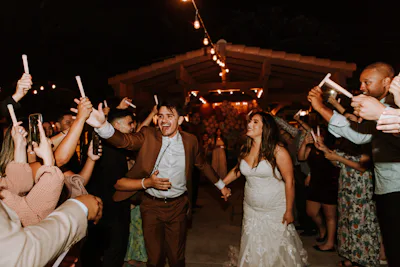
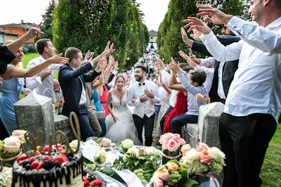
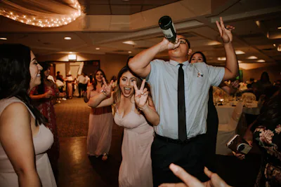
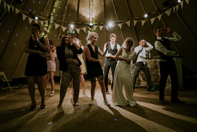
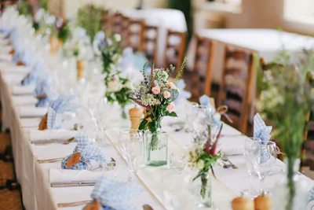
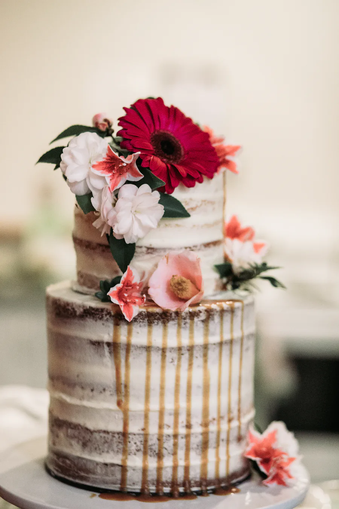
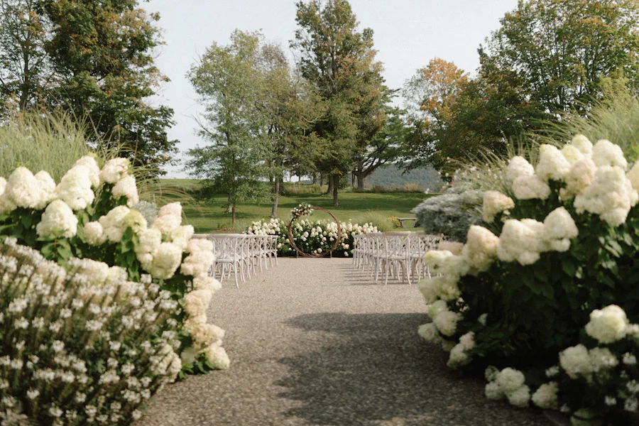
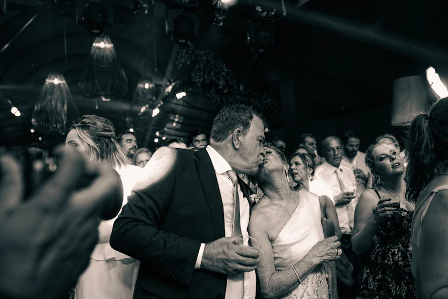
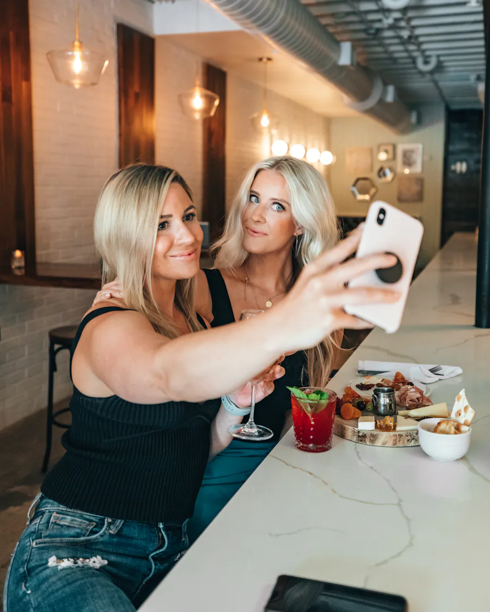

Spoločná galéria
Fotky od všetkých hostí v jednej prehľadnej nástenke, zoradené od najnovších. Pri každej vidno, kto ju pridal.
Svadby · Oslavy · Firemné akcie
Fotograf odovzdá fotky o mesiac. Tie najlepšie momenty však majú v telefónoch vaši hostia — a tam aj zostanú. NaPamiatku ich dostane k vám ešte v ten istý večer.
Svadba Zuzka & Marek






Ako to funguje
Celé to postavíme za vás. Vy dostanete hotový QR kód, ktorý stačí položiť na stoly.
Zaregistrujete sa a rovno v dashboarde si vytvoríte event. Hneď dostanete QR kód a odkaz pripravený na tlač.
Hosť namieri telefón na QR kód a je vnútri. Žiadne heslo, žiadna aplikácia, žiadna registrácia — napíše svoje meno, nahráva fotky a píše odkazy do knihy hostí.
Galéria rastie naživo počas celej akcie. Ktorúkoľvek fotku si stiahnete v plnej kvalite, čo sa vám nehodí, zmažete.
Čo v tom je
Nie zoznam funkcií pre efekt, ale veci, ktoré na mieste naozaj potrebujete.
Fotky od všetkých hostí v jednej prehľadnej nástenke, zoradené od najnovších. Pri každej vidno, kto ju pridal.
Digitálne želania a odkazy. Zostanú vám čitateľné aj o desať rokov — na rozdiel od podpisov na obruse.
Hosť naskenuje platobný kód, banka mu predvyplní príkaz a sumu si zvolí sám. Peniaze idú priamo na váš účet.
Žiadne rozmazané snímky z chatu. Každú fotku si stiahnete presne v takej kvalite, v akej bola nahraná.
Galéria nie je verejná a vyhľadávače ju nenájdu. Otvorí sa len tomu, kto má váš odkaz — a ten rozdávate vy. Keby sa dostal, kam nemá, jedným klikom ho zneplatníte.
Beží v prehliadači. Nič sa neinštaluje, nič nezaberá miesto a je jedno, či má hosť iPhone alebo Android.
Ukážka
Každá fotka nesie prezývku hosťa, ktorý ju pridal. Ilustračné fotky — u vás tam budú tie vaše.



